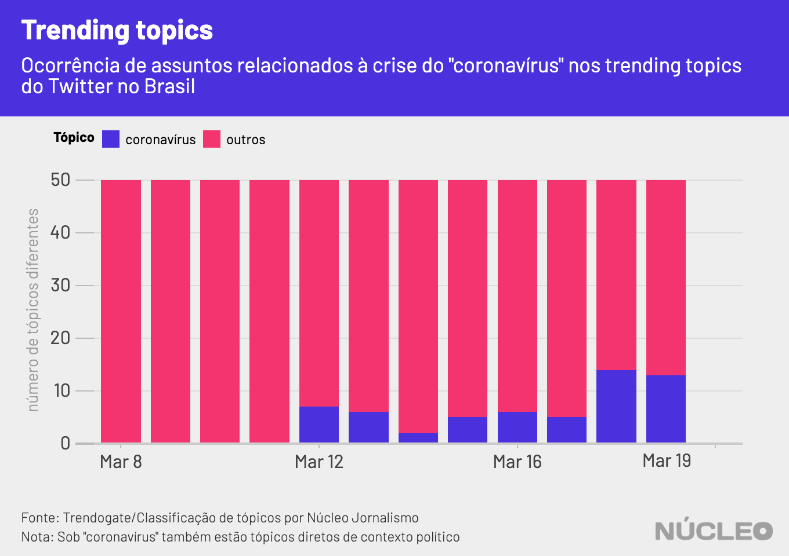
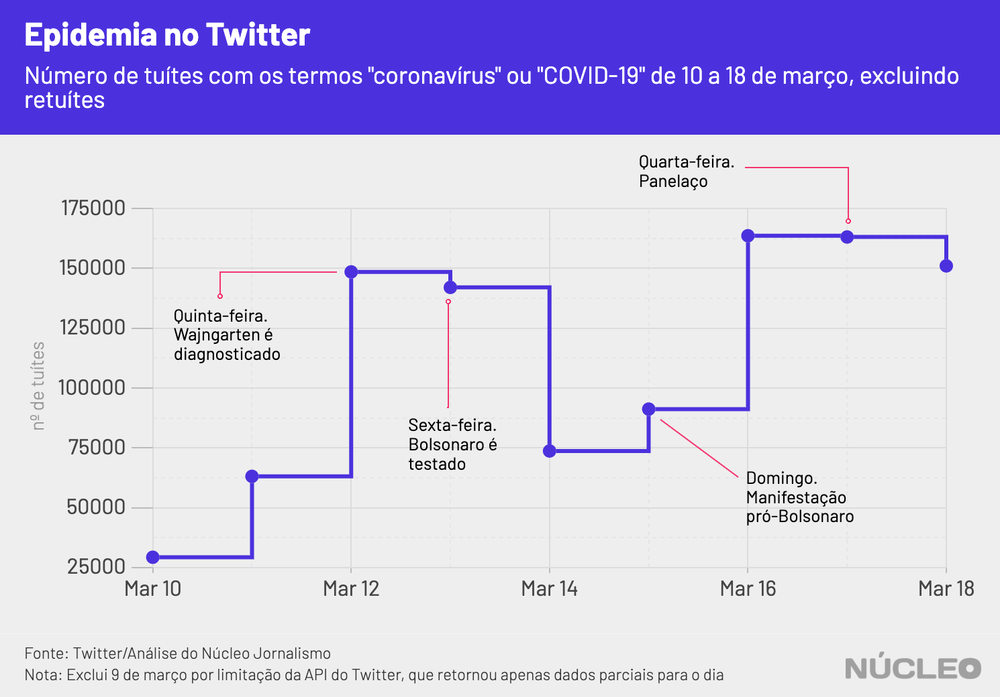

A pandemia do novo coronavírus no Brasil começou a ganhar predominância nas redes sociais a partir de notícias sobre a contaminação de autoridades brasileiras, no fim da semana passada, quando representantes do governo federal começaram a ser testados e diagnosticados com COVID-19.
Esse pode ser um indicativo de como as autoridades brasileiras estavam lidando com o caso, sem reconhecer publicamente sua devida gravidade, o que foi refletido na discussão nas redes sociais, que demorou para conhecer a dimensão do problema no país, mesmo com o agravamento da situação em todo mundo, especialmente na China e na Itália.
É importante porque…
-
O assunto tem dominado as discussões em redes sociais, à medida que medidas mais drásticas são tomadas para conter o vírus
-
Boa parte das autoridades se comunica com suas bases pelo Twitter, que se tornou um lugar de discussão política e de assuntos do momento
Acesse aqui dados em tempo real sobre a pandemia - via Johns Hopkins University
Até quinta-feira, 12 de março, quando o secretário de comunicação do governo, Fabio Wajngarten, testou positivo para o vírus, o assunto não havia chegado aos trending topics da rede social, de acordo com dados levantados pelo Núcleo no site Trendogate, que cataloga os 50 assuntos mais populares todos os dias, inclusive no Brasil (embora sem mostrar o número total de tuítes).

O Núcleo também analisou 1,03 milhões de tuítes de 9 a 19 de março e constatou que o assunto ganhou notoriedade essa semana, chegando a mais de 150 mil tuítes únicos por dia com os termos “coronavírus” e “COVID-19” em português no Brasil, desconsiderando retuítes e respostas.
Embora o Twitter não divulgue dados específicos por país, é possível dizer que 150 mil tuítes é um número significativo. O Brasil é o 5º maior mercado do Twitter no mundo, com 12,15 milhões de usuários.
Apenas como comparativo, as hashtags “#ProvaLider” e “#provaderesistencia” relacionadas ao reality show Big Brother Brasil, um dos assuntos que vinham movimentando o Twitter brasileiro antes da crise, haviam gerado, conjuntamente, cerca de 125 mil tuítes até 14h10 desta sexta-feira, 20 de março. Já o tópico “Dia 5”, relacionado ao isolamento social forçado pelo COVID-19, possuía 154 mil tuítes no mesmo horário.

Esses 1,03 milhão de tuítes geraram 7,5 milhões de retuítes e 34,2 milhões de curtidas. Abaixo, o tuíte com mais compartilhamentos registrados no período.
meu deus fizeram um remix da cardi b falando coronavírus pic.twitter.com/9ykMvrwMfw
— alysson villalba (@alysvillalba) March 13, 2020
No Google, o assunto também começou a disparar a partir de 8 de março. O termo “pandemia”, por exemplo, cresceu 1.150% em 10 dias.

-
O secretário 12 de marçoSecretário de comunicação do governo, Fabio Wajngarten, teste positivo para COVID-19
-
O presidente 13 de marçoPela manhã, muita ansiedade no noticiário sobre diagnóstico de Jair Bolsonaro
-
A manifestação 15 de marçoPresidente cumprimenta manifestantes e é criticado por estar sob suspeita de infecção
-
Políticas públicas 16 de marçoGovernos estaduais, municipais e federal anunciam medidas mais duras para combate à epidemia
-
Em pauta 17 de marçoCoronavírus continua forte no Twitter e na imprensa, com panelaço antecipado contra Bolsonaro
-
O panelaço 18 de marçoDiversas cidades brasileiras realizam panelaço contra Bolsonaro
Na imprensa
-
Bolsonaro é antepenúltimo em ranking de tuítes de presidentes sobre coronavírus ⋅ Folha de S.Paulo ⋅ (18/03/2020)
-
Coronavírus: Facebook, Google, Twitter e Microsoft se unem contra fake news ⋅ UOL ⋅ (17/03/2020)
-
Twitter removerá publicações que estimulam a propagação do coronavírus ⋅ Olhar Digital ⋅ (19/03/2020)
METODOLOGIA
O Núcleo capturou 1.034.973 tuítes das 20h50 do dia 9 de março até 3h19 do dia 19, utilizando a API gratuita do Twitter. Os códigos podem ser encontrados aqui.
A conta considera apenas tuítes únicos, ou seja, exclui retuítes e respostas a tuítes. Isso porque queremos medir a espontaneidade de publicações sobre o tema, não a reação (comentários e compartilhamentos). Por isso o número pode parecer mais modesto, mas na verdade é bem substancial.
Com a finalidade de manter a privacidade de usuários com perfis pouco notórios, o Núcleo não vai divulgar os dados brutos – cada pessoa pode rodar o código de extração para obter esses resultados.
Os dados sobre trending topics foram obtidos manualmente via Trendogate, que cataloga os 50 assuntos mais populares por dia na rede social, por país.
O Núcleo entrou em contato com o Twitter via email em busca de estatísticas agregadas pela própria plataforma, no Brasil. A plataforma respondeu apenas as duas informações abaixo, sem discriminação por país:
- No período de 9 a 19 de março foram contabilizados 409,3 milhões Tweets no mundo sobre o COVID-19
- No período de 16 a 18 de março foram contabilizados 154,4 milhões Tweets no mundo sobre o COVID-19